SHAKE SHACK의 특별한 메뉴를 만나보세요!
SHACK-SHACK BURGER
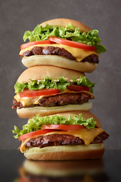
BURGERS 버거
쉐이크쉑의 시그니처 앵거스 비프 패티와 쫄깃한 식감의 토종효모 포테이토 번, 토마토, 양상추에 쉑소스를 올려 만든 심플하면서도 맛있는 쉑버거와 그 외 다양한 버거 메뉴가 있습니다.
쉐이크쉑 코리아는 늘 신선한 맛과 품질 유지를 위해 쉐이크쉑 본사에서 승인한 국내의 우수한 파트너사의 식재료를 사용합니다.

Seoul Bulgogi Buger
[7-8월 한정]
한일관의 서울식 불고기와 쉐이크쉑의 블랙 앵거스 비프 패티가 만난 쉐이크쉑 코리아 런칭 5주년 기념 콜라보레이션 버거
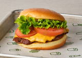
Double W 10,9
Shack Buger
비프패티와 함께 토마토, 양상추 쉑소스가 토핑된 치즈버거
Single W 6,9Double W 10,9
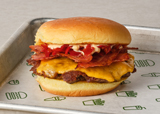
Double W 12,9
Smoke Shack
애플 우드 칩으로 훈연한 짭짤한 베이컨, 매콤한 체리페퍼, 비프패티와 쉑소스가 토핑된 치즈버거
Single W 8,9Double W 12,9
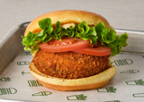
Shroom Buger
치즈로 속을 채우고 바삭하게 튀겨낸 포토벨로 버섯 패티에 양상추, 토마토, 쉑소스를 올린 베지테리안 버거
W 9,4
Shack Stack
포토벨로 버섯패티, 비프패티와 함께 토마토, 양상추, 쉑소스가 토핑된 치즈버거
W 12,4
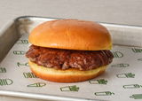
Double W 9,0
Hambuger
고소한 포테이토 번과 비프패티의 풍미 그대로를 느낄 수 있는 기본에 충실한 버거
Single W 5,4Double W 9,0

Chick'n Shack
버터밀크에 수비드한 후 바삭하게 튀겨낸 치킨 패티에 양상추, 피클, 허브마요 소스를 곁들인 버거
W 7,9* 베이컨 추가(Add Bacon) W1.5
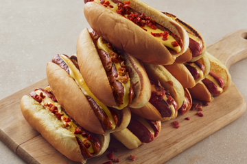
FLAT-TOP-DOGS 플랫-탑-도그
쉐이크쉑의 시작을 알리기도 했던 플랫-탑 도그를 버거와 함께 즐겨보세요!
쫄깃한 토종 효모 포테이토 번 위에 참나무 칩으로 훈연한 비프 소시지가 들어간 담백한 핫 도그에 다양한 토핑을 추가해서 맛도 UP! 즐거움도 UP! 시켜보세요
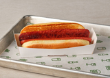
Hot Dog
비프 소시지가 들어간 담백한 핫 도그
W 4,4
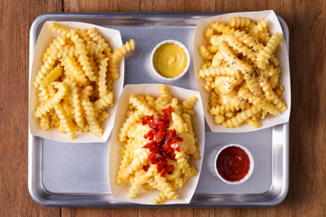
SIDE 사이드
버거를 먹을 때 사이드 메뉴가 빠져서는 안되죠!
바삭하게 튀겨낸 치킨 바이트를 디핑 소스에 듬뿍 찍어 한 입, 짭짤한 감자튀김을 달콤한 쉐이크에 찍어 한 입. 쉐이크쉑의 사이드 메뉴와 함께라면 그날의 스트레스는 모두 날아갈 거에요!
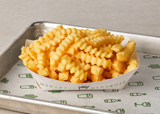
Cheese Fries
쉐이크쉑만의 특별한 치즈 소스를 듬뿍 올린 바삭한 크링클 컷 프라이
W 4,9Fries
바삭하고 담백한 크링클컷 프라이
W 3,9
CONCRETES 콘크리트
버쫀득하고 진한 맛의 커스터드와 다양한 믹스-인이 만나 탄생한 쉐이크쉑만의 디저트 메뉴, 콘크리트를 만나보세요. 혹시 알고 계셨나요? 쉐이크쉑의 매장마다 각 지역의 특성을 살려 탄생한 매장별 시그니처 콘크리트가 있다는 사실! 콘크리트와 함께 쉐이크쉑에서의 달콤한 마무리를 즐겨보세요!
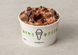
Double W 8.9
Shack Attack
진한 초콜릿 커스터드에 퍼지 소스와 세 가지 초콜릿 토핑이 블렌딩된 쉐이크쉑의 대표 콘크리트
Single W 5.9Double W 8.9
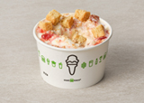
Double W 8.9
Gangnam
달콤한 딸기 잼과 고소한 콩가루, 쇼트브레드가 어우러진 쉐이크쉑 강남의 시그니처 콘크리트
Single W 5.9Double W 8.9
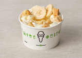
Double W 8.9
Cheongdam327
부드럽고 달콤한 바나나와 꿀, 그리고 바삭한 쇼트브레드가 어우러진 쉐이크쉑 청담의 시그니처 콘크리트
Single W 5.9Double W 8.9
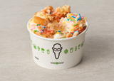
Double W 8.9
Dongdaemun Rainbow
달콤한 딸기 잼과 폭신한 글레이즈드 도넛, 그리고 알록달록 레인보우 스프링클이 어우러진 쉐이크쉑 두타의 시그니처 콘크리트
Single W 5.9Double W 8.9
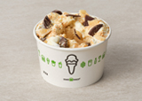
Double W 8.9
Crunchstar
달콤 바삭한 초콜렛 토피와 초콜렛 청크, 그리고 고소한 콩가루가 어우러진 쉐이크쉑 분당의 시그니처 콘크리트
Single W 5.9Double W 8.9
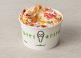
Double W 8.9
Goyangblossom
달콤한 딸기 잼과 바삭한 슈가 콘, 그리고 화려한 레인보우 스프링클이 어우러진 쉐이크쉑 고양의 시그니처 콘크리트
Single W 5.9Double W 8.9
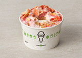
Double W 8.9
Fly Me to the Shack
상큼한 스트로베리 퓨레와 달콤한 꿀, 그리고 바삭한 슈가 콘이 함께 어우러진 쉐이크쉑 인천공항의 시그니처 콘크리트
Single W 5.9Double W 8.9
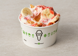
Double W 8.9
Central Berry Banhana
부드러운 바나나와 달콤 상큼한 스트로베리 퓨레, 그리고 바삭한 슈가 콘이 함께 어우러진 쉐이크쉑 센트럴시티의 시그니처 콘크리트
Single W 5.9Double W 8.9
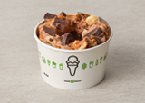
Double W 8.9
Crunch Street
달콤 바삭한 초콜렛 토피와 초콜렛 청크, 그리고 고소한 피넛 버터 소스가 어우러진 쉐이크쉑 송도의 시그니처 콘크리트
Single W 5.9Double W 8.9
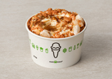
Double W 8.9
Fly Me to the Shack
부산의 소울 푸드, 씨앗호떡에서 영감을 받아 탄생한 쉐이크쉑 부산 서면의 시그니처 콘크리트
Single W 5.9Double W 8.9
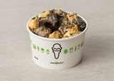
Double W 8.9
Gran giwa
달콤한 바닐라 & 초콜릿 커스터드 위에 흑임자의 고소함이 더해진 쉐이크쉑 종각의 시그니처 콘크리트
Single W 5.9Double W 8.9
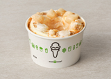
Double W 8.9
Injeolmi Time
달콤하고 진한 솔티드 허니와 고소하고 쫄깃한 인절미가 매력적인 쉐이크쉑 타임스퀘어의 시그니처 콘크리트
Double W 8.9
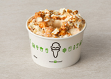
Double W 8.9
I-Poppin'
쉑 메이드 된장 캐러멜 소스와 달콤한 캐러멜 팝콘, 땅콩이 어우러져 바삭한 식감이 매력적인 쉐이크쉑 용산의 시그니처 콘크리트
Single W 5.9Double W 8.9
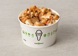
Double W 8.9
Dalgona Daegu
대구 꿀떡의 쫀득함과 달고나의 달콤함이 매력적인 쉐이크쉑 대구 동성로의 시그니처 콘크리트
Single W 5.9Double W 8.9
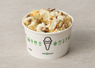
Double W 8.9
Daejeon Bam Bam
대전에서 생산된 고소한 밤과 달콤한 바닐라 커스터드가 만나 탄생한 쉐이크쉑 대전 타임월드의 시그니처 콘크리트
Single W 5.9Double W 8.9
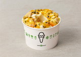
Double W 8.9
Nowon Norang
망고 & 패션 프루트의 상큼 달콤함과 쇼트브레드의 바삭함이 매력적인 쉐이크쉑 노원의 시그니처 콘크리트
Single W 5.9Double W 8.9
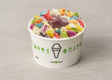
Double W 8.9
Over the Rainbow
컬러풀한 머랭 쿠키와 달콤한 블루베리 잼, 그리고 상큼한 레몬 커드가 어우러진 쉐이크쉑 코엑스의 시그니처 콘크리트
Single W 5.9Double W 8.9
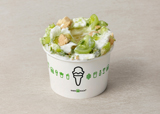
Double W 8.9
Pongdang Dongtan
상큼 달콤한 청포도와 시원한 민트가 어우러진 쉐이크쉑 동탄의 시그니처 콘크리트
Single W 5.9Double W 8.9
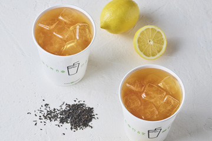
DRINK 드링크
매장에서 매일 신선하게 제조하는 쫀득하고 진한 커스터드 쉐이크, 상큼한 레몬에이드, 달지 않고 향긋한 아이스티, 레몬에이드와 아이스티를 반반 섞은 쉐이크쉑의 시그니처 음료 피프티/피프티도 잊지 마세요.

Makgeolli Shack
[7-8월 한정] 바닐라 커스터드에 전통 막걸리와 라이스 토핑을 블렌딩한 쉐이크쉑 코리아 런칭 5주년 기념 쉐이크 (알콜/논알콜 선택 가능)
W 6,8
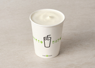
Classic Hand-Spun Shakes
바닐라, 초콜렛, 솔티드 카라멜, 블랙&화이트, 스트로베리, 피넛버터, 커피
W 5,9
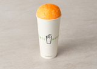
Floats
부드러운 바닐라 커스터드와 톡톡 터지는 탄산이 만나 탄생한 색다른 음료 (루트 비어/퍼플 카우/크림시클®)
W 5,9
Watermelon Basil Lemonade
[7-8월 한정] 바질을 우려낸 레몬에이드에 달콤한 워터멜론 베이스를 더한 여름과 잘 어울리는 시즈널 레몬에이드
Small W 3,9Large W 4,5

Lemonade
매일 매장에서 신선하게 제조하는 상큼한 레몬에이드
Small W 3,9Large W 4,5

Fresh Brewed Iced Tea
홍차를 직접 우려내어 달지 않고 향긋한 아이스티
Small W 3,9Large W 4,5

Fifty/ Fifty
레몬에이드와 아이스티를 반반 섞어 만든 쉐이크쉑의 시그니처 음료
Small W 3,5Large W 4,4

Fountain Soda
코카콜라, 코카콜라 제로, 스프라이트, 환타 오렌지, 환타 그레이프, 환타 파인애플
Small W 2,7Large W 3,3

Abita Root Beer
청량감 있는 독특한 미국식 무알콜 탄산음료
Bottle W 4,4
Hot Tea
보성 유기농 찻잎을 우려낸 녹차, 홍차, 페퍼민트&레몬그라스 블렌딩 티
W 3,4
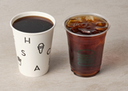
Coffee
미국 스페셜티 커피 브랜드 스텀프타운의 쉑 블렌드 원두를 사용한 드립 커피
(Only T2 & Central City)
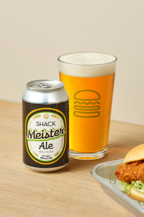
ALE 에일
쉑버거의 절친이라 할 수 있는 쉑마이스터 에일을 소개합니다. 쉐이크쉑의 버거 맛을 돋우기 위해 핸드앤몰트에서 특별히 양조한 쉑마이스터 에일 한 모금이면 버거의 풍미는 두 배가 될 거예요. 와인을 찾는 게스트들을 위해 프랑스 라파주 와이너리에서 생산한 쉑 와인 (쉑 레드, 쉑 화이트)도 있답니다.

Shack Master Ale
[전 매장 공통 메뉴] 시원한 솔 향과 빵의 풍미를 지닌 몰트 향이 쉐이크쉑의 버거와 잘 어울리는 에일
W 6,8
Slow IPA
[전 매장 공통 메뉴] 홉을 천천히 맥주에 스며들게 하여 끝맛이 깔끔한 시트러스 아로마 향의 IPA
W 6,8
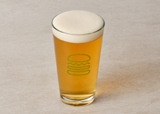
Gorillager
[대구 동성로, 대전 타임월드점 제외 전매장 공통 메뉴] 가볍고 부드러우며 약간의 드라이함이 특징인 대중적인 스타일의 라거
W 6,8
Shack Red/ Shack White
프랑스 라파주 와이너리에서 쉐이크쉑을 위해 특별히 생산한 쉑 와인
Glass W 7,8Bottle 29,9

Korea Pale Ale
[부산 서면점 특화 메뉴] 한국 스타일에 맞추어 설계한 트로피컬하고 마시기 쉬운 페일 에일
W 6,8
Yuja Pure Ale
[대전 타임월드점 특화 메뉴] 고흥 유자를 사용하여 가벼우면서도 복합적인 풍미를 가진 에일
W 6,8
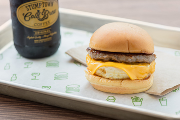
BREAKFAST 아침 메뉴
( ~ 10:00am)
여행을 떠나기 전, 든든하게 배를 채워보세요.
쉐이크쉑의 특별한 아침 메뉴는 오직 인천공항 T2에서만 즐길 수 있습니다.

Sausage, Egg N' Cheese
유정란 프라이, 돼지고기 소시지, 체다 치즈가 토핑된 버거
One egg W6.8Two eggs W8.0

Bacon, Egg N' Cheese
유정란 프라이, 애플우드 칩으로 훈연한 베이컨, 체다 치즈가 토핑된 버거
One egg W5.8Two eggs W7.0

Egg N' Cheese
유정란 프라이와 체다 치즈가 토핑된 버거
One egg W4.8Two eggs W6.0